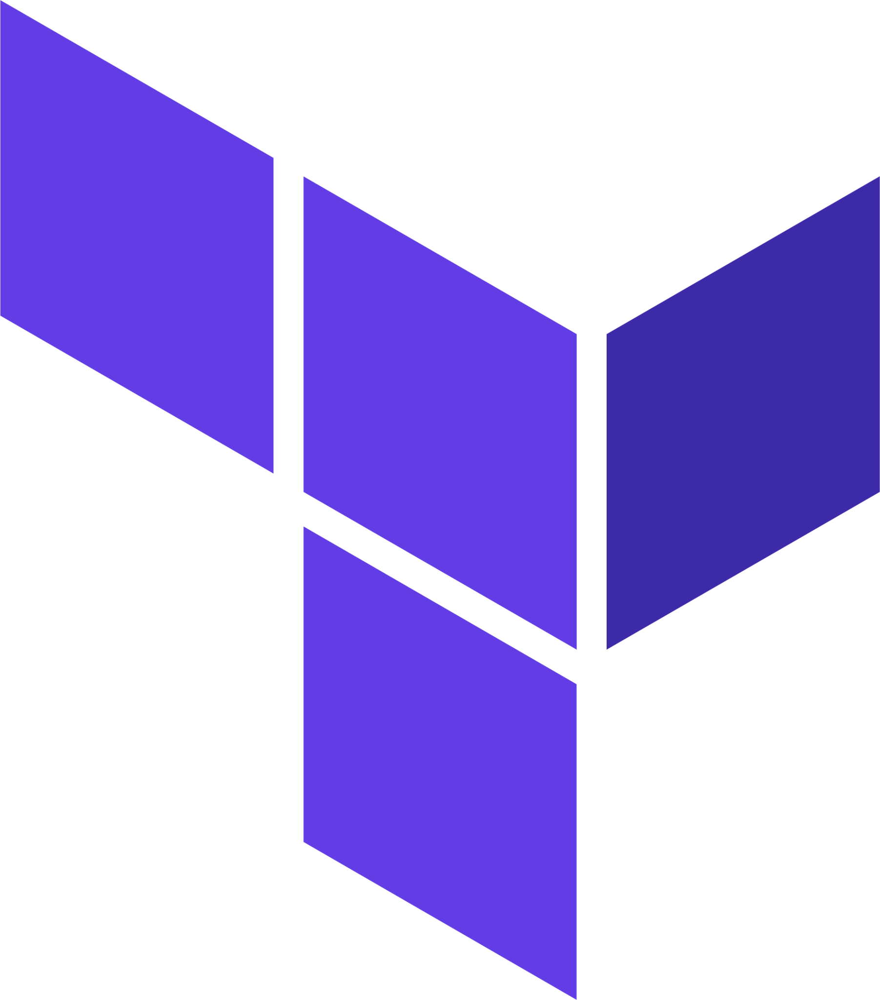
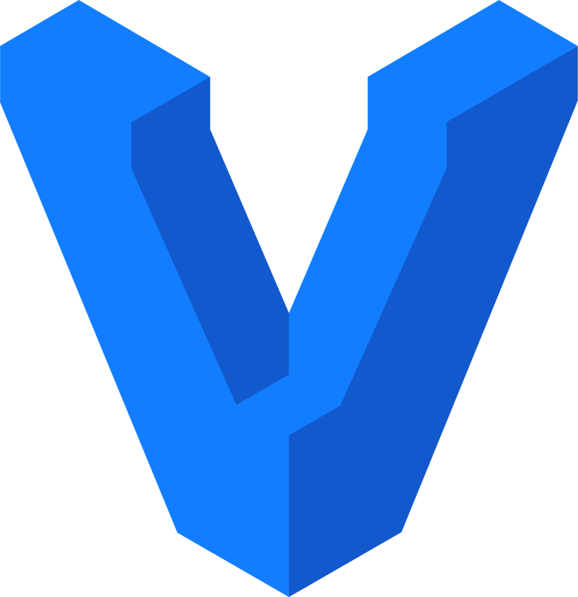

Compétences
Python 
Création de scripts pour automatiser des tâches répétitives telles que le tri de fichiers, la gestion de données et l'exécution de commandes système mais aussi pour automatiser le déploiement d'applications et la gestion des serveurs avec des outils comme Fabric et Ansible.
Ansible 
Expertise en configuration d'Ansible pour Azure et GCP, incluant l'automatisation de la création et de la gestion des ressources cloud, le déploiement d'applications, ainsi que la surveillance et la gestion des configurations et performances. Intégration d'Ansible dans les pipelines CI/CD pour des déploiements sécurisés et efficaces.
Terraform 
Maîtrise de Terraform sur des plateformes comme Azure et GCP, avec des compétences en provisionnement automatisé de ressources telles que les machines virtuelles, les bases de données SQL et les serveurs Nginx. Intégration de Terraform dans les pipelines CI/CD pour des déploiements fiables et reproductibles.
Vagrant 
Maîtrise de Vagrant pour le déploiement rapide de machines préconfigurées, facilitant le développement et les tests. Création d'environnements de développement cohérents et reproductibles, incluant des machines virtuelles prêtes à l'emploi, pour des déploiements efficaces d'applications.
Langage C
Avec une maîtrise avancée du langage C, je suis capable de développer des solutions logicielles efficaces et robustes. Mon expertise dans ce langage me permet d'optimiser les performances des applications et de résoudre efficacement les problèmes complexes.
Azure 
Grâce à ma maîtrise avancée d'Azure, je suis capable de concevoir et de déployer des solutions cloud fiables et évolutives. Mon expertise dans l'écosystème Azure me permet d'optimiser les architectures cloud, de maximiser les performances et d'assurer la sécurité des applications et des données.